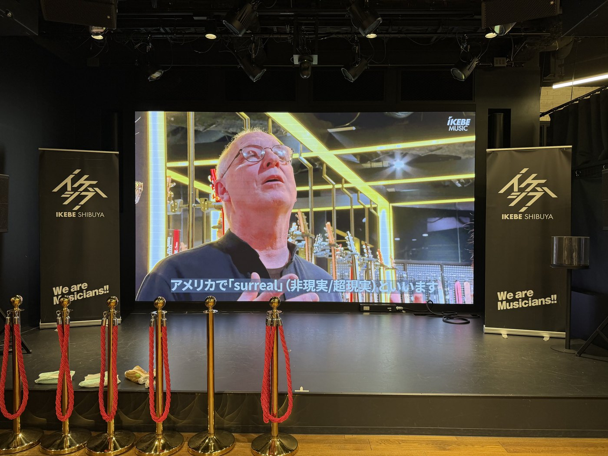
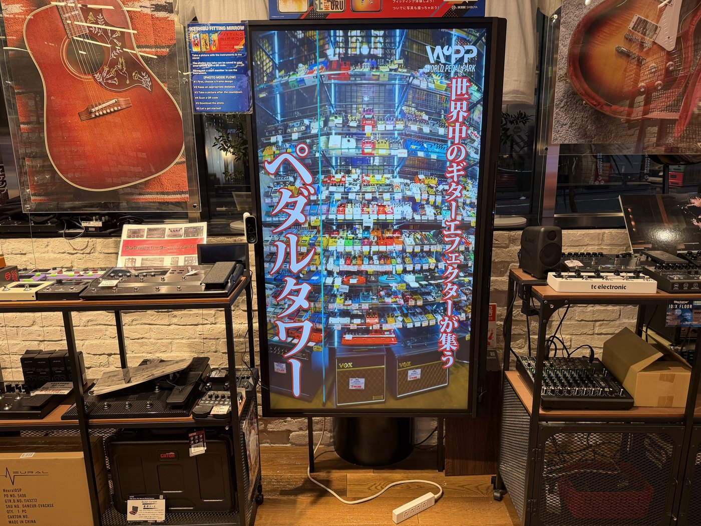

ボランティア受賞選考の補足資料
ドレミファダンスコンサート2025 ハイライト
担当：撮影・編集
東京都障害者ダンス大会のメイキングをボランティアで撮影・編集。運営に協力する東京表参道ライオンズクラブが、ライオンズクラブ国際協会「思いやりは大切なこと」奉仕アワード（2026年3月／全世界 約5万クラブ中30クラブ）を受賞した際、その選考の補足資料として本映像が使用されました。メイキングを見る →
撮影・編集を担当した映像のうち、外部で公開・放映されたり、第三者の場で使われたりしたもの。ボランティアで関わった大会の記録から、勤務先（イケシブ）の依頼映像まで。
東京都障害者ダンス大会のメイキングをボランティアで撮影・編集。運営に協力する東京表参道ライオンズクラブが、ライオンズクラブ国際協会「思いやりは大切なこと」奉仕アワード（2026年3月／全世界 約5万クラブ中30クラブ）を受賞した際、その選考の補足資料として本映像が使用されました。メイキングを見る →

PRS VAULT のオープンに合わせた記念映像。撮影から1週間以内に初稿を仕上げる、スピード重視の進行で対応しました。勤務先の公式YouTubeチャンネルと店舗内モニターで公開中です。

店舗を紹介する縦型ショート。ショート動画らしいポップでテンポのある雰囲気づくりを意識しました。こちらも店舗内で放映されています。

